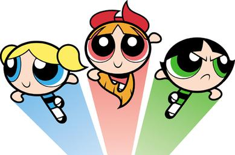
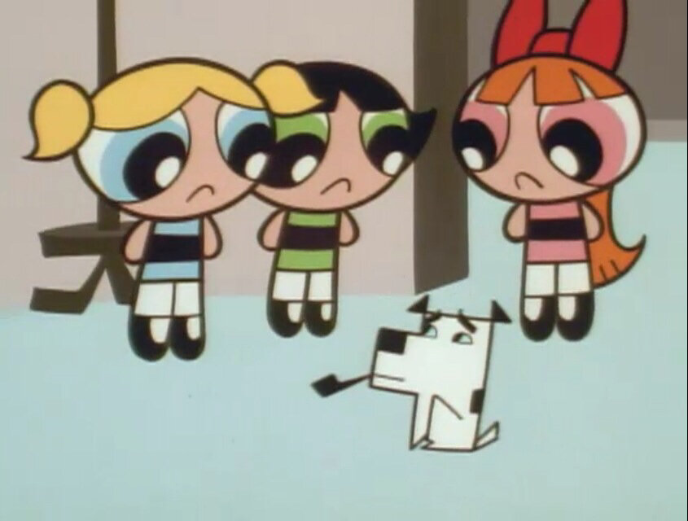
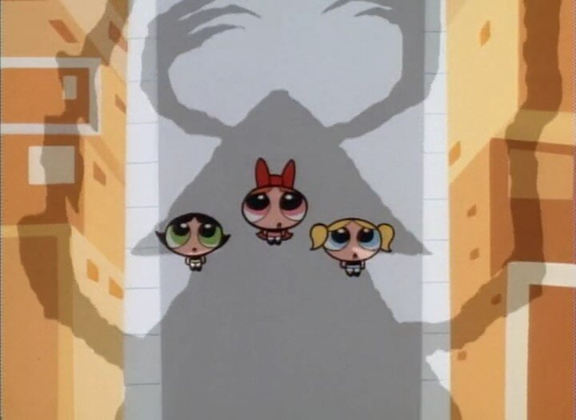
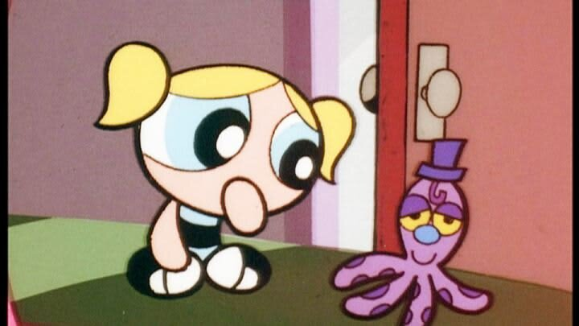

The Powerpuff Girls




Details
My notes
powerpuff girls
Added from my childhood-show list. The exact version and episodes I watched have not been specified; the pictures here use the original-series character design for reference.
About the show
Blossom, Bubbles, and Buttercup are superpowered sisters created by Professor Utonium. They protect Townsville from villains, including Mojo Jojo.
- Original series creator
- Craig McCracken
- Original series began
- 1998
- Original network
- Cartoon Network
The franchise has later versions with a different look. This entry does not assume which version, language, or channel I remember watching.
Gallery pictures are references for recognition; they do not imply that I remember these particular episodes.